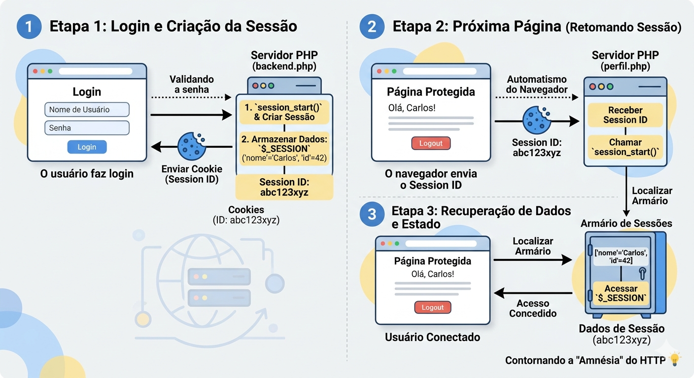

Descrição: Esta aula aborda os pilares fundamentais da segurança e autenticação no desenvolvimento web com PHP.
Dominar esses conceitos é essencial para criar aplicações que protejam os dados dos usuários e evitem invasões.
Para entender como a Web funciona nos bastidores, imagine que o navegador e o servidor PHP são duas pessoas conversando por cartas. O grande problema é: o servidor tem amnésia. Cada carta que chega é tratada como se fosse de um perfeito estranho.Isso é o que chamamos de protocolo stateless (sem estado).
Se você fizesse login na "Carta 1", ao enviar a "Carta 2" para ver seu feed, o servidor já teria esquecido quem é você. É aí que entram as Sessões e os Cookies para salvar o dia!
O Cookie é um pequeno arquivo de texto que o servidor pede para o navegador salvar no seu próprio computador.
No contexto de login, pense no cookie como um crachá de visitante contendo apenas um número de identificação único e aleatório (o Session ID).
O navegador guarda esse crachá e, toda vez que faz uma nova requisição ao servidor, ele mostra o crachá automaticamente.
Para entender os perigos escondidos no uso padrão dos cookies e como corrigi-los, vamos voltar à analogia do crachá de visitante.
Quando você faz login, o servidor te entrega um crachá físico (o cookie com o Session ID).
O grande problema é: o servidor não olha para o seu rosto, ele só olha para o crachá.
Se um hacker conseguir clonar ou roubar o seu crachá, ele pode colocá-lo no próprio peito e entrar pela porta da frente do site. O servidor vai deixá-lo entrar e vai achar que é você.
Abaixo, vamos dividir essa falha de segurança em duas partes didáticas: o perigo (o roubo) e a solução (as travas de segurança).
Imagine que você está em um evento usando seu crachá de acesso VIP.
Se você se distrair, alguém pode tirar uma foto nítida do seu crachá, falsificar uma cópia perfeita e usar enquanto você vai ao banheiro.
No mundo digital, isso é o Sequestro de Sessão (Session Hijacking).
O invasor não precisa descobrir a sua senha complexa de 20 caracteres. Ele só precisa "copiar e colar" o valor do seu cookie de Session ID no navegador dele.
A partir desse milissegundo, para o servidor PHP, o hacker é você.
Existem duas maneiras principais pelas quais um hacker consegue roubar esse crachá:
Para evitar que o crachá seja roubado ou usado por terceiros, os navegadores modernos e o PHP possuem "travas de segurança" que podemos ativar.
Vamos explicar como colocar essas travas usando a função session_set_cookie_params().
Pense nessas configurações como sistemas de proteção extras para o seu crachá.
Por padrão, qualquer script JavaScript rodando na página consegue ler os cookies do usuário digitando document.cookie.
Se um hacker conseguir injetar um script malicioso no site (XSS), ele rouba o Session ID facilmente.
Quando ativamos a flag HttpOnly (Apenas HTTP), nós dizemos ao navegador: "Este cookie só pode ser usado para viajar nas cartas enviadas ao servidor. Nenhum código JavaScript tem permissão para tocá-lo ou lê-lo".
Na analogia: É como costurar o crachá por dentro do bolso do paletó. Ele é enviado automaticamente quando você passa pela porta, mas nenhum batedor de carteira (JavaScript) consegue puxá-lo dali.
Se o usuário estiver navegando em uma rede Wi-Fi pública e o site usar http:// (sem o "S" de seguro), os dados trafegam abertamente pelo ar.
Quando ativamos a flag Secure, o navegador recebe uma ordem expressa: "Só envie este cookie se a conexão for https:// (criptografada)".
Se o usuário tentar acessar uma página não segura, o navegador simplesmente esconde o cookie e não envia.
Na analogia: É como determinar que o crachá só pode viajar de uma ponta a outra se for dentro de um carro forte blindado. Se tentarem enviar por motoboy comum, o envio é cancelado.
O código correto para iniciar uma sessão protegida com essas travas não usa apenas o session_start(). Antes dele, configuramos os parâmetros do cookie:
// 1. Definimos as regras de segurança do crachá ANTES de iniciar a sessão
session_set_cookie_params([
'lifetime' => 0, // O cookie expira quando o navegador fechar
'path' => '/', // Disponível em todo o site
'domain' => '', // Domínio atual
'secure' => true, // SÓ envia se for HTTPS (Ative em produção!)
'httponly' => true, // Bloqueia o JavaScript de ler o cookie (Protege contra XSS)
'samesite' => 'Strict' // Proteção extra contra ataques de clique falso (CSRF)
]);
// 2. Agora sim, iniciamos a sessão com o cookie blindado
session_start();Ao adicionar essas linhas, você garante que sua aplicação não está apenas usando sessões, mas impedindo que os "crachás" dos seus usuários sejam clonados por aí.
Se o Cookie é o crachá que fica com o usuário, a Sessão é um armário de segurança que fica dentro do servidor. O número do armário é exatamente o mesmo número do crachá do usuário (Session ID).
Dentro desse armário, o PHP pode guardar qualquer informação importante sobre o usuário (como o ID dele no banco de dados, o nome, ou o carrinho de compras).
No PHP, esse armário é representado pela variável superglobal $_SESSION, que funciona como uma gaveta (um array) onde você guarda e busca os dados:
// Guardando dados na sessão (trancando no armário)
$_SESSION['usuario_nome'] = "Carlos";
$_SESSION['usuario_id'] = 42;
// Recuperando dados em outra página
echo "Bem-vindo de volta, " . $_SESSION['usuario_nome'];Segurança: O usuário só tem acesso ao "crachá" (Cookie). Ele não consegue ver nem modificar o que está dentro do "armário" (Sessão) no servidor. Isso torna o processo seguro.
A função session_start() é o comando que ativa todo esse sistema.
Quando o PHP executa essa linha, ele faz duas coisas:
Se o usuário não tiver um crachá ainda, o PHP cria um novo armário e envia o novo crachá para o navegador.
Esta função deve ser a primeira linha de código do seu arquivo PHP, antes de qualquer HTML, espaço em branco ou comando echo.
Por que? Porque o crachá (Cookie) viaja escondido no "envelope" da carta (os cabeçalhos HTTP).
Se você enviar qualquer texto ou HTML primeiro, o PHP "fecha o envelope" e o envia. Depois que o envelope é enviado, você não pode mais colocar o crachá lá dentro!

Para entender a criptografia de senhas, precisamos primeiro quebrar um mito: o sistema não precisa saber qual é a sua senha para saber se você digitou a senha certa.
Imagine a senha como um ingrediente secreto e o banco de dados como um livro de receitas.
Se você salvar a senha em texto puro, qualquer um que abrir o livro rouba o ingrediente. É por isso que usamos o Hash.
Pense no hash como um procesador de alimentos gigante: você joga a senha lá dentro, ele tritura, mistura e te entrega uma "vitamina" (uma string de 60 caracteres). É fisicamente impossível olhar para a vitamina e reconstruir a senha original.
Vamos analisar o que acontece nos dois momentos cruciais da sua aplicação: quando o usuário cria a conta e quando ele tenta entrar.
Nesta etapa, o objetivo é transformar a senha em algo irreconhecível antes de enviar para o banco de dados.
$senhaDigitada = "minhaSenhaSegura123";O que está acontecendo: O usuário preencheu o formulário de cadastro. A senha está exposta na memória como texto puro (clear text). Se o seu banco de dados fosse invadido agora e essa variável fosse salva direto, o hacker saberia a senha de imediato.
$hashParaSalvar = password_hash($senhaDigitada, PASSWORD_DEFAULT);O que está acontecendo: Chamamos o processador de alimentos. A função password_hash() pega a senha pura e aplica o algoritmo Bcrypt (definido pelo PASSWORD_DEFAULT).
O resultado: O PHP gera algo parecido com isso:
$2y$10$92IXUNpkjO0rOQ5byMi.Ye4oKoEa3Ro9IIC/.og/at2.uheWG/igiÉ este monstrinho que você vai salvar no seu banco de dados. Mesmo que um hacker invada seu banco, ele só verá códigos sem sentido.
Dias depois, o usuário volta e tenta logar. Como o hash é irreversível, o PHP não pode "descriptografar" o código do banco para ler o que está escrito. Então, como validar?
if (password_verify($senhaDigitada, $hashSalvoNoBanco)) {
echo "Senha correta!";
} else {
echo "Senha incorreta!";
}O que está acontecendo: A função mágica password_verify() entra em ação. Ela recebe a senha que o usuário acabou de digitar no login ($senhaDigitada) e o hash que você buscou lá do banco de dados ($hashSalvoNoBanco).
A lógica interna: Ela joga a nova senha digitada no mesmo "processador de alimentos". Se o resultado dessa nova trituração encaixar perfeitamente com o padrão do hash do banco, a função retorna true (verdadeiro).
O if toma a decisão. Se a validação deu true, o código entra no primeiro bloco (onde você iniciaria a $_SESSION do usuário). Se o usuário errar uma única letra, o cálculo matemático falha, a função retorna false e o else barra o invasor.
Note que o hash gerado possui muitos caracteres. Além disso, o parâmetro PASSWORD_DEFAULT é inteligente: se o PHP for atualizado no futuro e um algoritmo mais seguro que o Bcrypt for adotado, o tamanho do hash pode aumentar.
Espaço no Banco: Na hora de criar a tabela de usuários no seu banco de dados (MySQL, PostgreSQL, etc.), a coluna senha deve ser configurada como VARCHAR(255).
Se você configurar como VARCHAR(50), por exemplo, o banco de dados vai "cortar" o pedaço final do hash para caber no espaço. Um hash cortado perde a integridade e, quando o password_verify() tentar fazer o cálculo, ele nunca vai bater. O usuário ficará trancado para fora da conta para sempre!
O SQL Injection ocorre quando um invasor insere comandos SQL maliciosos nos campos de formulário para manipular seu banco de dados. Para evitar isso, nunca concatene variáveis diretamente na string do SQL. Use Prepared Statements (Instruções Preparadas) com PDO ou MySQLi.
Para entender o que esse código faz, imagine que o banco de dados é um cofre de segurança máxima e o PHP é o gerente do banco. Se você tenta colocar o e-mail do usuário direto na frase do SQL (concatenando), é como se você deixasse um estranho escrever a ordem de abertura do cofre em um papel de pão. O invasor poderia escrever "Abra o cofre E apague todos os registros".
O Prepared Statement (Instrução Preparada) resolve isso criando um "molde" rígido antes de colocar os dados do usuário. Vamos ver como o PHP faz isso:
// Exemplo seguro usando PDO
$email = $_POST['email'];O que o PHP está fazendo: Ele vai até o formulário que o usuário preencheu, pega o que foi digitado no campo "email" e guarda dentro de uma caixinha (variável) chamada $email. Nesse momento, o PHP ainda não sabe se o que está ali dentro é um e-mail real ou um código malicioso de um hacker.
// 1. Prepara a query (usando :email como um "placeholder")
$stmt = $pdo->prepare("SELECT * FROM usuarios WHERE email = :email");O que o PHP está fazendo: Esta é a linha mais importante. O PHP envia para o banco de dados apenas a estrutura da ordem: "Busque tudo na tabela de usuários onde o email seja igual a... [ESPAÇO RESERVADO]".
O :email funciona como um placeholder (um dublê ou uma vaga reservada). O banco de dados recebe esse molde, analisa e entende o comando. Ele já sabe exatamente o que tem que fazer e fica blindado: não importa o que venha depois, o banco já decidiu que ali só vai entrar um texto de e-mail, e nunca um novo comando SQL.
// 2. Vincula o valor com segurança (o PDO limpa os caracteres maliciosos)
$stmt->bindValue('email', $email);O que o PHP está fazendo: Agora que a vaga está reservada com segurança, o comando bindValue (vincular valor) pega o conteúdo da caixinha $email (o que o usuário digitou) e encaixa perfeitamente no lugar do dublê :email.
Se um hacker tiver digitado comandos maliciosos, o PDO neutraliza tudo, transformando o ataque em um texto comum e inofensivo. É como se o banco de dados dissesse: "Eu sei que isso parece um comando, mas como você está entrando na vaga de e-mail, vou te tratar apenas como um texto qualquer".
// 3. Executa a query
$stmt->execute();
$usuario = $stmt->fetch(PDO::FETCH_ASSOC);O que o PHP está fazendo: Com o molde pronto e o valor devidamente encaixado e limpo, o PHP dá a ordem de execução: "Pode rodar a busca agora!". O banco de dados executa a procura de forma rápida e 100% segura.
O banco de dados encontrou o e-mail? Se sim, ele traz os dados de volta. O comando fetch() vai lá e "captura" essa linha de resultado. O dedinho extra PDO::FETCH_ASSOC organiza esses dados em um formato muito fácil para o PHP ler: um array associativo. Significa que, a partir de agora, você pode acessar os dados do usuário usando nomes amigáveis, como $usuario['nome'], $usuario['id'] ou $usuario['senha']. Se ninguém for encontrado, a variável $usuario simplesmente fica vazia (false).
Para impedir que alguém acesse o dashboard.php digitando a URL diretamente sem estar logado, você precisa verificar se a sessão existe no início de todas as páginas protegidas.
<?php
// Arquivo: dashboard.php
session_start();
// Verifica se a variável de sessão NÃO existe
if (!isset($_SESSION['usuario_id'])) {
// Redireciona de volta para o login
header("Location: login.php");
exit;
}
echo "Bem-vindo à área protegida, " . $_SESSION['usuario_nome'] . "!";
?>Para entender esse código, imagine que o seu site é um clube privado. A página dashboard.php é a área VIP dentro do clube. Se alguém tentar pular o muro ou digitar o endereço direto na barra do navegador para entrar na área VIP sem passar pela portaria (a página de login), este código funciona como o segurança da porta, checando se a pessoa tem o "crachá" de acesso.
Vamos ver o que cada linha faz de forma bem simples:
No seu formulário de login, você pode verificar se existe uma mensagem de erro na sessão para exibi-la e, em seguida, apagá-la.
<?php
session_start();
if (isset($_SESSION['erro_login'])) {
echo "<p style='color: red;'>" . $_SESSION['erro_login'] . "</p>";
unset($_SESSION['erro_login']); // Apaga a mensagem após exibir
}
?>Para deslogar o usuário, você precisa destruir a sessão no servidor.
<?php
// Arquivo: logout.php
session_start(); // Primeiro, recuperamos a sessão atual
// Remove todas as variáveis da sessão
session_unset();
// Destrói a sessão completamente no servidor
session_destroy();
// Redireciona para a página de login
header("Location: login.php");
exit;
?>Configurar o arquivo conexao.php utilizando PDO (PHP Data Objects) é a melhor escolha para a segurança do seu sistema.
O PDO não só permite o uso de Prepared Statements (essenciais para evitar SQL Injection), mas também oferece um sistema robusto de tratamento de erros.
Abaixo está o código ideal para o seu conexao.php, configurado com as melhores práticas de segurança e pronto para rodar com o sistema de login criado anteriormente.
<?php
// Configurações do Banco de Dados
$host = 'localhost';
$db = 'nome_do_seu_banco';
$user = 'usuario_do_banco';
$pass = 'senha_do_banco';
$charset = 'utf8mb4'; // Define o charset correto para evitar problemas com acentuação e segurança
// DSN (Data Source Name) - Contém as informações de conexão do driver
$dsn = "mysql:host=$host;dbname=$db;charset=$charset";
// Opções de configuração do PDO
$options = [
// 1. Lança exceções em caso de erros SQL (Crucial para tratamento de erros)
PDO::ATTR_ERRMODE => PDO::ERRMODE_EXCEPTION,
// 2. Define o modo de busca padrão para array associativo (ex: $usuario['nome'])
PDO::ATTR_DEFAULT_FETCH_MODE => PDO::FETCH_ASSOC,
// 3. Desativa a emulação de prepared statements (Força o MySQL a usar prepared statements reais)
PDO::ATTR_EMULATE_PREPARES => false,
];
try {
// Cria a instância de conexão que será usada nos outros arquivos
$pdo = new PDO($dsn, $user, $pass, $options);
} catch (\PDOException $e) {
// Registra o erro no log do servidor para o desenvolvedor analisar
error_log($e->getMessage());
// Exibe uma mensagem genérica amigável
die("Desculpe, ocorreu um problema técnico de conexão. Tente novamente mais tarde.");
}
?>Nesta aula, compreendemos que a segurança no desenvolvimento backend não é um recurso adicional, mas a base estrutural de qualquer aplicação web profissional.
Aprendemos a contornar a natureza "desmemoriada" do protocolo HTTP utilizando Sessões e Cookies de forma blindada, aplicando travas modernas diretamente nas diretivas do navegador para impedir o roubo de identidade digital (Session Hijacking).
Além disso, desmistificamos o armazenamento de credenciais ao adotar o algoritmo de hashing Bcrypt (garantindo que nem mesmo os administradores do sistema tenham acesso às senhas puras dos usuários) e isolamos o banco de dados contra instruções invasivas através de Prepared Statements com PDO.
Ao fechar as portas da aplicação com verificações estritas de sessão e ocultação de erros técnicos em produção, você deixa de ser apenas um programador que faz sistemas funcionarem e passa a ser um desenvolvedor consciente, capaz de mitigar os ataques mais comuns mapeados no cenário global da segurança da informação.